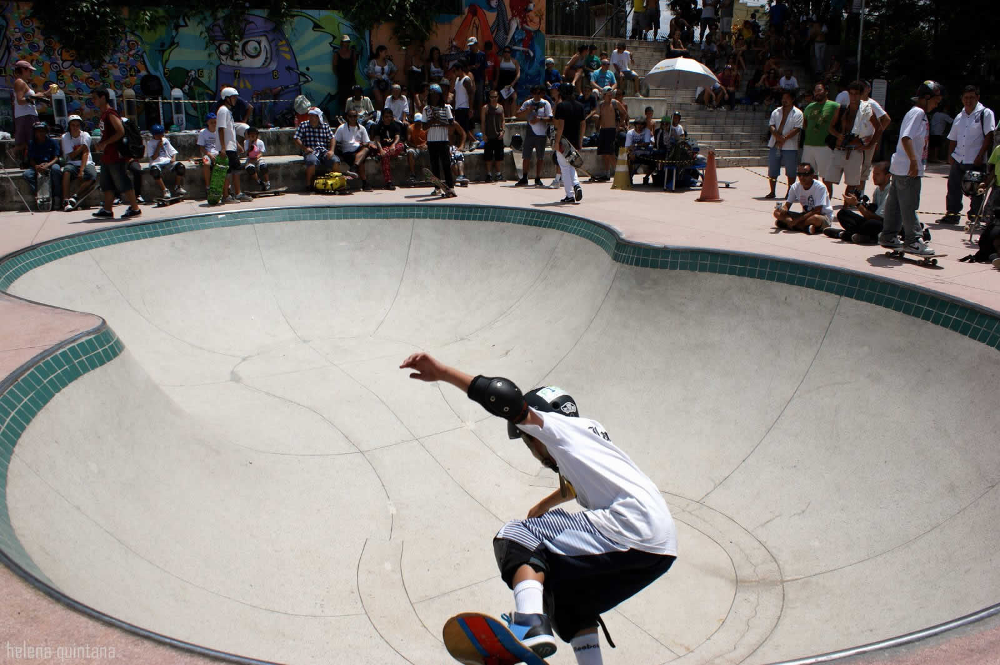
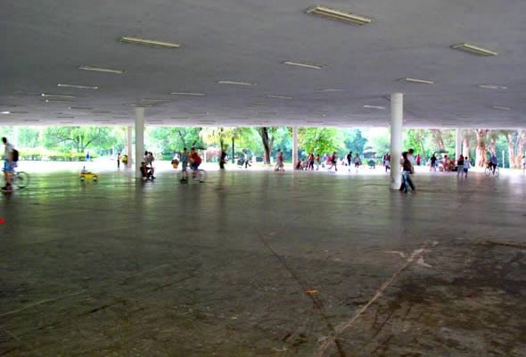
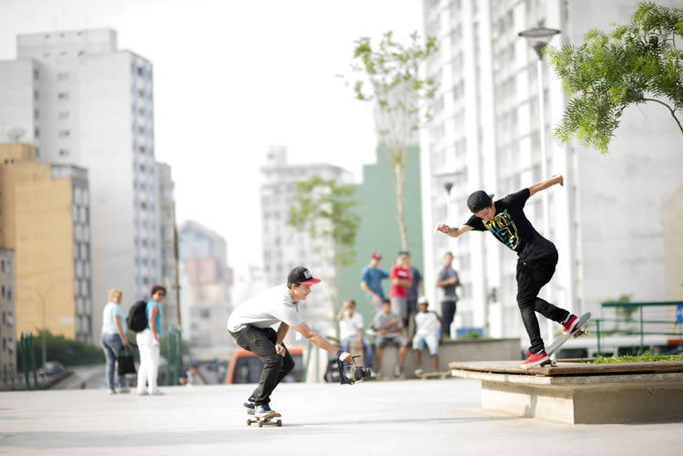
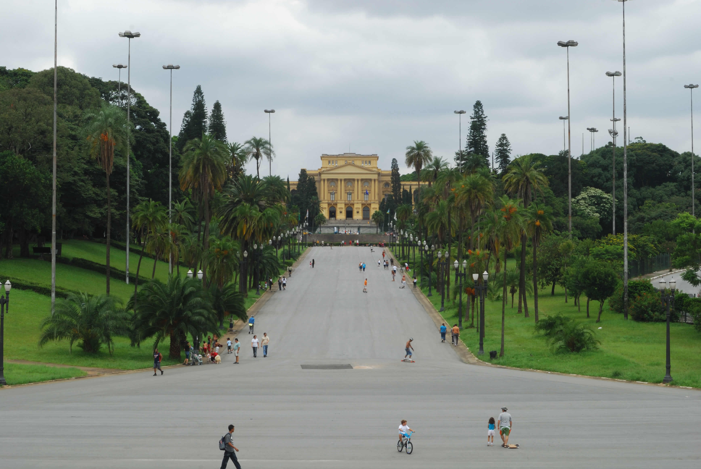

5 Lugares legais pra andar de skate ou patins em SP
Parque da juventude
{kind=link}
Endereço: Fácil acesso pela estação Carandiru do metrô, tem duas entradas uma na Avenida Cruzeiro do Sul, altura do número 2500 ou na Avenida Zachi Narchi, 1300.
Aberto: Diariamente
Horário: Das 6h às 0:30h (a área verde funciona das 6h às 18h).
Telefone: (11) 2251-2706
Parque Zilda Natel

Endereço: Av. Dr. Arnaldo, 1250 (Esquina com a Rua Cardoso de Almeida, em Perdizes) – Sumaré
Aberto: Diariamente
Horário: Das 9h às 21h (exceto em dias de jogos no Pacaembu)
Telefone: (11) 3862-2921
Ibirapuera

Endereço: Avenida Pedro Álvares Cabral, s/n°, Portão 3 |
Aberto: Diariamente
Horário: Das 5h ás 0h
Telefone: (11) 5574-5505
Praça Roosevelt

Endereço: Praça Franklin Roosevelt, s/n, Próximo ao metrô República e Anhangabau
Aberto: Diariamente
Horário: Livre
Telefone: Não Possui
Pista da Imigrantes – Parque Fontes do Ipiranga

Endereço: Av. Nazareth, s/nº - Ipiranga (Subprefeitura Ipiranga)
Aberto: Diariamente
Horário: Das 5h às 20h
Telefone: (11) 2273-725